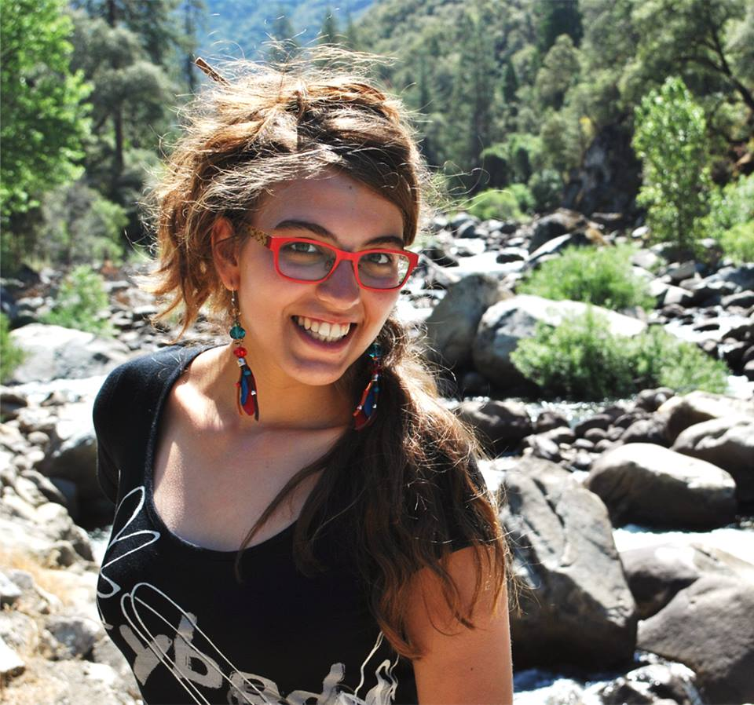
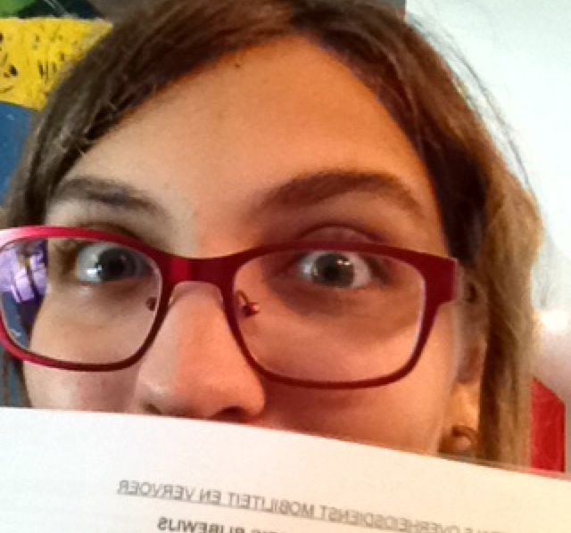
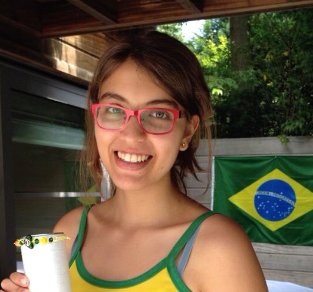
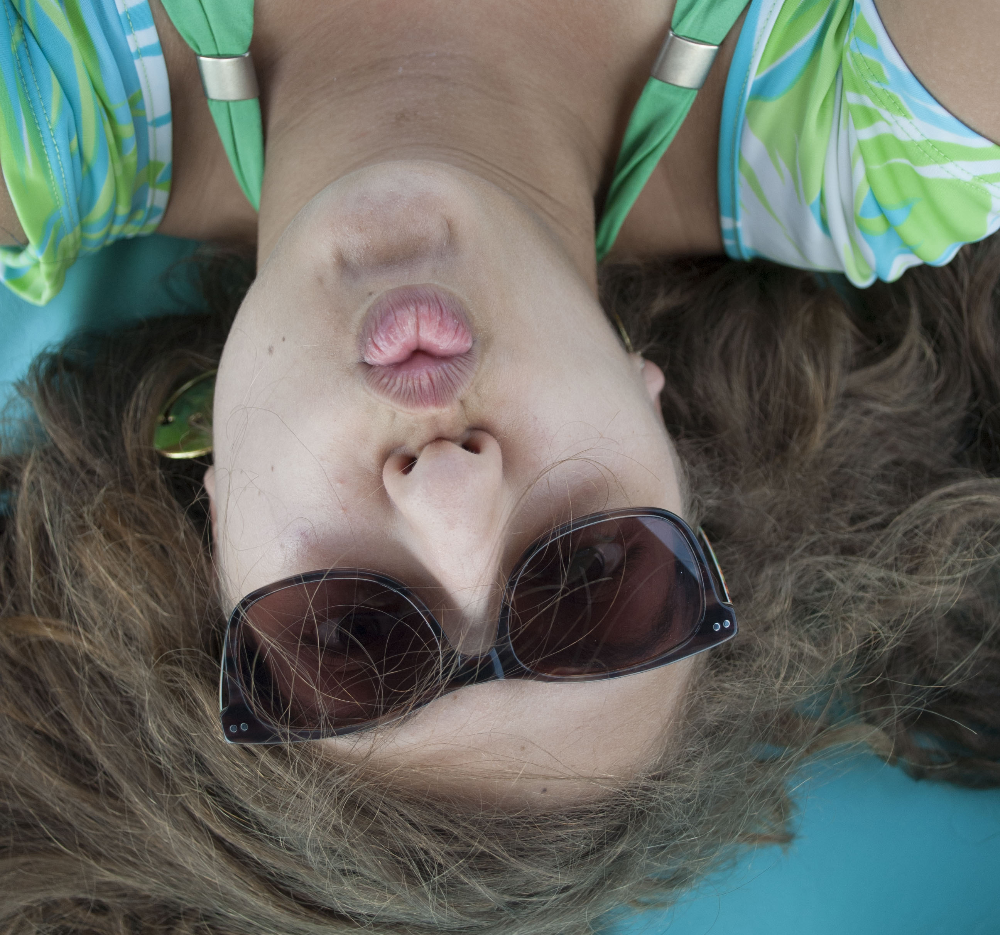

Algemeen
Ana Carolina Lobo Lemmens
° 04 december 1996 - São Paulo - Brazilië
gesproken talen :
Nederlands - Portugees - Engels - Frans
Studies
Grafische en Digitale Media
Start 2014 - Artesis Plantijn Hogeschool Antwerpen
Wetenschappen Wiskunde
Afgestudeerd in 2014 - Sint Michielscollege Schoten
Beeldende Kunsten
Afgestudeerd in 2014 - Deeltijds Kunstonderwijs Academie Merksem